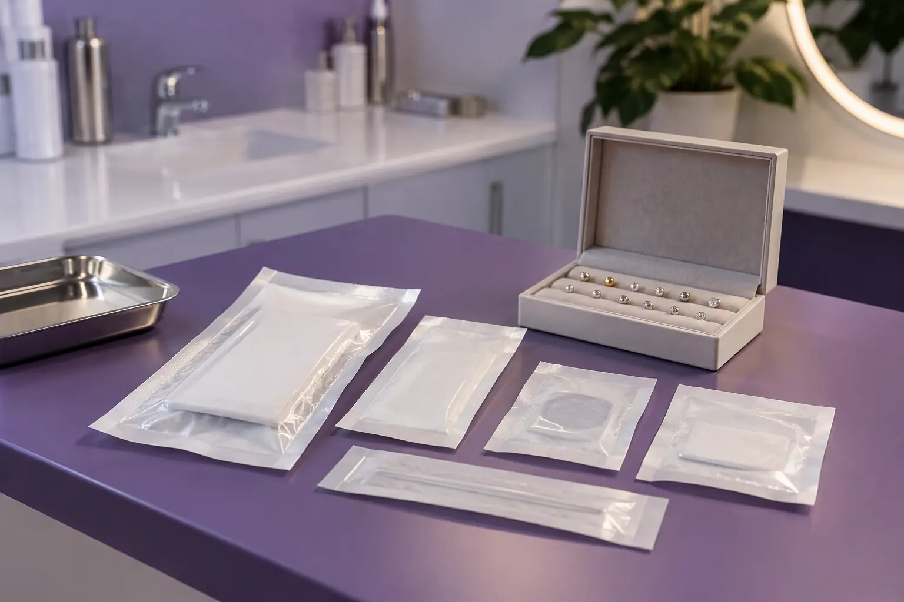

Auskarų vėrimo metodas ir įrankiai: ką paaiškina specialistas?
Autorius: Madbeauty redakcija · Numatyta 2026 m. gruodžio 12 d. 10:00 (Lietuvos laiku)
Palyginame vėrimą adata, daugkartinį pistoletą ir vienkartinės kapsulės sistemas. Sužinokite, ką verta išsiaiškinti apie instrumentus, jų sterilizavimą ir papuošalą.

Pavadinimas „vėrimas adata“ ar „vėrimo sistema“ nusako tik dalį paslaugos. Kad galėtumėte prasmingai palyginti pasiūlymus, išsiaiškinkite tris dalykus: koks tiksliai metodas naudojamas, kurios jo dalys vienkartinės ar daugkartinės ir kaip užtikrinamas instrumentų sterilumas. Vienkartinės priemonės pavadinimas savaime neatsako, kaip tvarkoma likusi įranga.
Ką reiškia skirtingi metodų pavadinimai?
- Adata. Teikėjas turėtų įvardyti, kokiu įrankiu atliekamas vėrimas ir kokios priemonės naudojamos papuošalui įdėti. Pats žodis „adata“ nepasako, kurios kitos dalys liečia odą ar kaip jos paruošiamos.
- Daugkartinis vėrimo pistoletas. Asociacija „Association of Professional Piercers“ (APP) pasisako prieš daugkartinius vėrimo pistoletus ir kelia klausimų dėl jų sterilizavimo, papuošalo bei vėrimo kremzlėje. Tai profesinės asociacijos rekomendacija, ne Lietuvos teisės draudimas ir ne visų vienkartinių sistemų vertinimas. APP pozicija apie vėrimo pistoletus.
- Vienkartinės kapsulės ar kita sistema. Paklauskite, ką teikėjas konkrečiai vadina vienkartine priemone: kuri dalis panaudojama tik vieną kartą, o kuri įranga naudojama pakartotinai. APP rekomendacijos apie daugkartinius pistoletus savaime neįvertina kiekvienos atskiros kapsulinės sistemos.
Sterilizavimo informacija: ko ieškoti?
Vėrimas pažeidžia odą, todėl svarbu ne vien įrankio pavadinimas, bet ir tai, kaip teikėjas paaiškina priemonių paruošimą. NVSC nurodo, kad grožio paslaugai reikalingas galiojantis leidimas-higienos pasas. Jo rekomendacijose taip pat rašoma, kad odą pažeidžiančiai paslaugai sterilios priemonės iš pakuotės atidaromos klientui matant. NVSC informacija apie grožio paslaugų saugą ir teikėjo pasirinkimo rekomendacijos.
- Koks tiksliai metodas bus naudojamas ir kurios priemonės liečia pradūrimo vietą?
- Kurios priemonės ar jų dalys vienkartinės, o kurios naudojamos pakartotinai?
- Jei naudojamas sterilus vienkartinis instrumentas, ar pakuotė bus atidaryta jums matant?
- Jei naudojama daugkartinė įranga, kaip teikėjas paaiškina jos paruošimą tarp klientų?
- Koks papuošalas įtrauktas į paslaugą, iš kokios medžiagos jis pagamintas ir kokia informacija apie jį pateikiama?
Papuošalą verta vertinti atskirai nuo vėrimo įrankio. APP rekomendacijose pradiniam papuošalui svarbiais įvardijami dydis, forma, medžiagos dokumentai, paviršius ir sujungimo būdas. Tai profesinės asociacijos rekomendacijos, o ne Lietuvos įstatymas ar konkretaus teikėjo kokybės patvirtinimas. Vien medžiagos pavadinimo, pavyzdžiui, „titanas“, nepakanka visoms šioms savybėms suprasti. APP rekomendacijos apie pradinius papuošalus.
Kaip palyginti du pasiūlymus?
Įsivaizduokite du aprašus: viename nurodyta „adata“, kitame – „vienkartinė sistema“. Iš šių žodžių dar negalite spręsti, kaip paruošiamos visos odą liečiančios priemonės. Paprašykite abiejų teikėjų paaiškinti, kurios dalys vienkartinės, kaip tvarkomos daugkartinės dalys ir ar sterilus instrumentas atidaromas jums matant. Tada palyginkite, ar aiškiai įvardytas papuošalas ir kas įeina į paslaugą. Tai iliustracinis pavyzdys, ne konkrečių teikėjų ar jų paslaugų įvertinimas.
Aiškus atsakymas į šiuos klausimus leidžia suprasti, ką reiškia paslaugos pavadinimas ir kaip teikėjas apibūdina priemones. Jei informacija apie metodą ar instrumentų paruošimą neaiški, paprašykite ją patikslinti prieš pasirinkdami vizitą.
Procedūrų aprašai kataloge: Auskarų vėrimas. Miestą ir realaus teikėjo pasiūlymą pasirinkite kataloge, kai tokia pasiūla pateikta.
Susiję gidai
Šaltiniai
- NVSC · grožio paslaugų sauga, 2026-09-17 · nvsc.lrv.lt
- NHS · infekcija po auskarų vėrimo · www.nhs.uk
- NVSC · teikėjo pasirinkimas ir instrukcijos · nvsc.lrv.lt
- Jo Mi: vėrimo meniu su įtrauktu papuošalu · jomitattoo.lt
- ODA klinika: vėrimo apimtis, atskiri papuošalai ir laikas · odaklinika.lt
- Association of Professional Piercers: initial jewellery · safepiercing.org
- Association of Professional Piercers: piercing guns · safepiercing.org